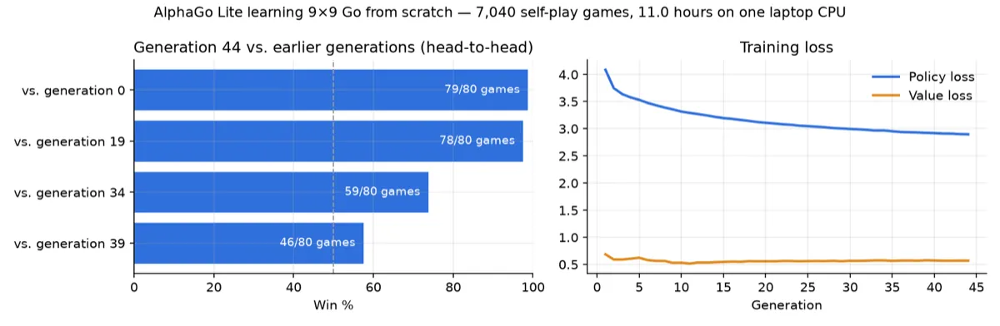

2026 · 9×9 Go, one laptop CPU
AlphaGo Lite
A 9×9 Go engine that taught itself by self-play in 11 hours on one laptop; its last generation beats its first in 79 of 80 games, and still loses all 40 to GNU Go’s weakest level.
The question
AlphaGo Zero learned Go from nothing but the rules, by playing against itself. This project rebuilds that recipe on a 9×9 board, trains it on one laptop with no GPU, and ships it as a Mac app and a website that show which moves the engine is weighing as you play.
The question is how far self-play gets at laptop scale.
Setup
Standard 9×9 Go: simple ko, no suicide, area scoring and a komi of 7.5. The network is a small residual net, 4 blocks of 48 channels and 188,173 parameters, that reads 6 planes describing the board and outputs a move (any of the 81 points, or pass) and a guess at who will win. It was chosen over a 6×64 net that took about twice as long per position.
Each generation plays 160 games against itself with Monte Carlo tree search guided by the network: 160 simulations on a quarter of the moves and 40 on the rest, so most moves are cheap. The network then trains on where the search spent its visits and on who won, with every position seen in all 8 rotations and reflections.
In all, 44 generations and 7,040 self-play games, in about 11 hours over four sittings on one 8-core Intel Core i9 with no GPU.
How it works
- Self-play: 10 workers, 16 games each
- Tree search guided by the network
- Train on visit counts and results
- Check generations head to head
- Export to Core ML and ONNX
- Play in the Mac app or the browser
Results
Each head-to-head is 80 games at 64 simulations a move. Generation 44 beat generation 0 in 79 of 80 games, generation 19 in 78 and generation 34 in 59; against generation 39 it won 46. Over training the policy loss fell from 4.09 to 2.90 nats and the value loss from 0.69 to 0.57.
Against an outside opponent it’s still weak: at 400 simulations a move it lost all 40 games to GNU Go 3.8 at level 1, its weakest setting, by a median of 81 points.
The same network runs in PyTorch, in Core ML in the Mac app and in the browser, and the three agree to within 8 millionths. A 400-simulation search takes about half a second in the app and about a second in the browser.

What didn’t work
In absolute terms it’s weak: it lost every game to GNU Go’s weakest level, and it has never been measured against people. Gains were flattening by the end, with generation 44 beating generation 39 only 46 times in 80.
One run stalled for two hours when a self-play worker died and its job was silently dropped; timeouts and retries fixed it. It’s one training run with one seed, on a machine shared with other work.
The app leaves out superko, handicap stones, time controls and saving games, the search runs on a single thread, and scoring doesn’t remove dead stones.
What’s next
Measure its strength against people, and try the same pipeline on a second board or game, such as 7×7 Go or Connect Four.